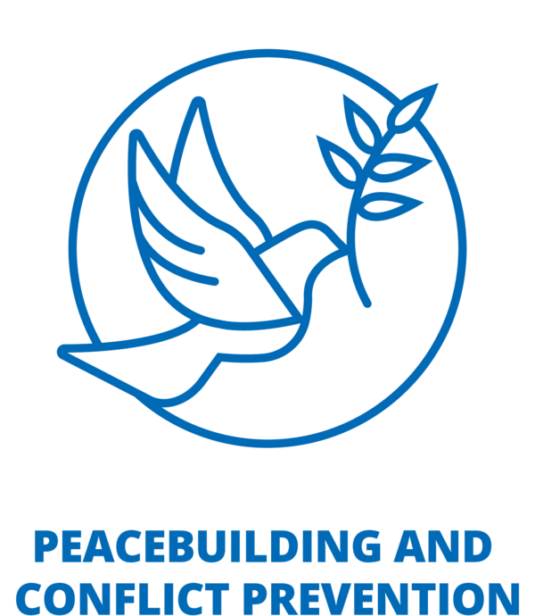
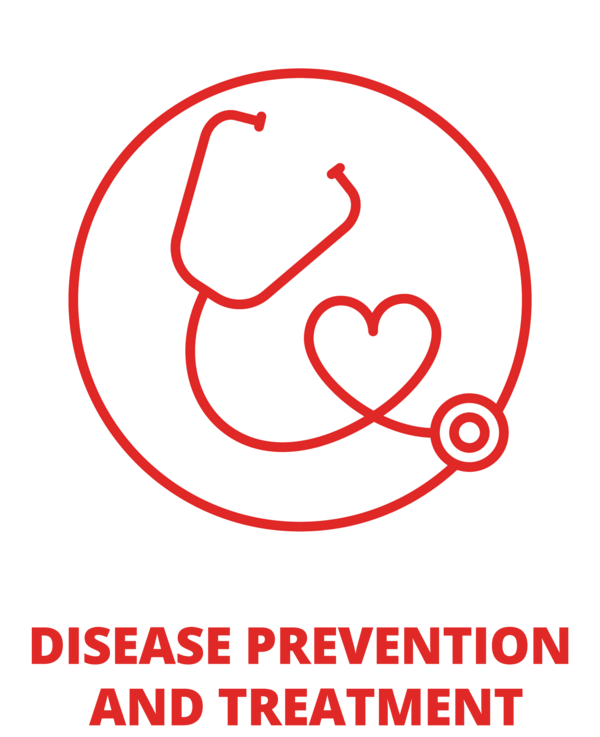
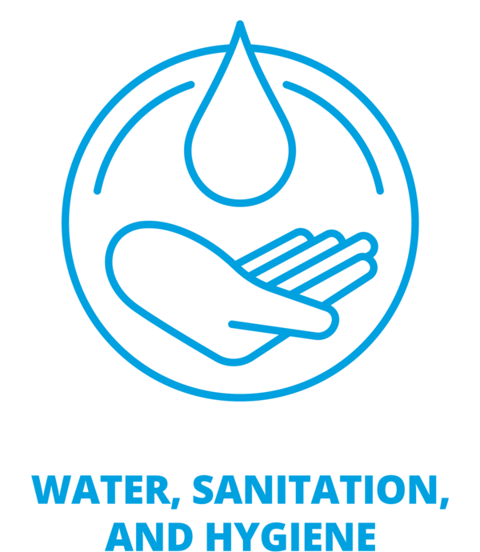
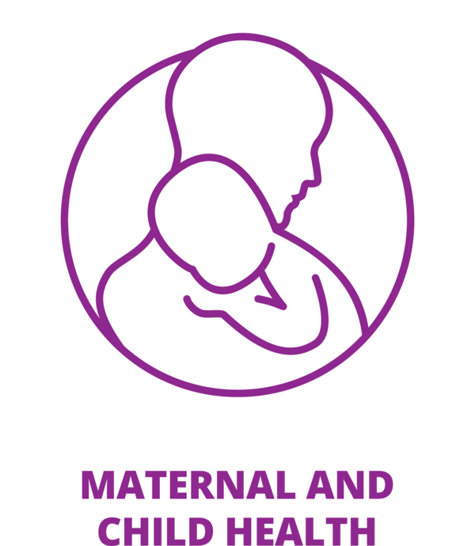
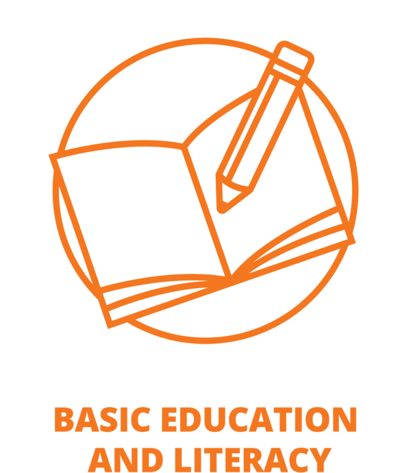
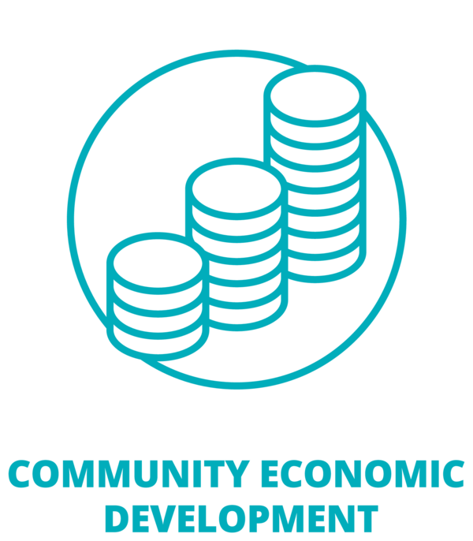
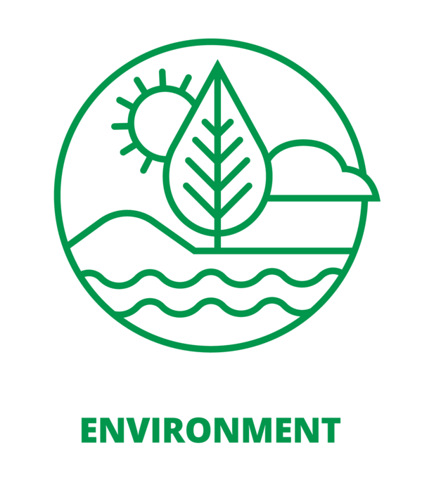
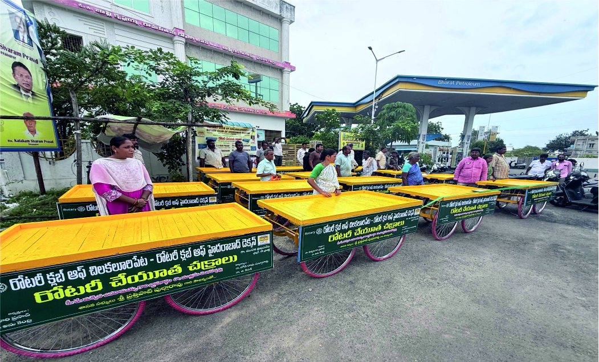

Rotary Club of Hyderabad Deccan
District 3150 • Hyderabad, India
Every act of giving begins with a simple decision — to care. For decades, the Rotary Club of Hyderabad Deccan has turned that decision into measurable impact: healthcare for families, education for children, dignity for women and hope for those who need it most.
A Legacy of Trusted Service
Established in 1988, the Rotary Club of Hyderabad Deccan is among the region's most respected and accomplished Rotary clubs. Our members include business leaders, professionals, prominent citizens and change-makers — united by one purpose: giving back meaningfully.
With deep experience and strong governance, the Club is known for turning ideas into action and donations into results.

The Rotary Journey
What began as a small fellowship gathering in Chicago in 1905 has become one of the world's most respected service movements. Today, Rotary unites more than 1.4 million members across 46,000+ clubs worldwide — leaders, professionals and citizens committed to solving real human challenges.
From eradicating disease and expanding education, to building peace and supporting communities, Rotary transforms local action into global progress. It is non-political, non-religious and united by one enduring principle:
“Service Above Self.”
Of the things we think, say or do
Go to Rotary International ›
Creating Impact. Changing Lives.
Every project we undertake is designed to solve real problems and create lasting outcomes across seven areas of focus.







Our Signature Projects
From dialysis and diagnostics to clean water, livelihoods and life-changing surgeries — these are the projects that define our service.



Join Us
There is no shortage of need. What creates change is organised compassion backed by trusted execution. We invite you to be part of our mission.
Support healthcare, education, water and community infrastructure.
Directly fund urgent human needs and life-changing initiatives.
Associate your brand with respected, high-visibility platforms.
Create long-term impact in the name of your family or organisation.